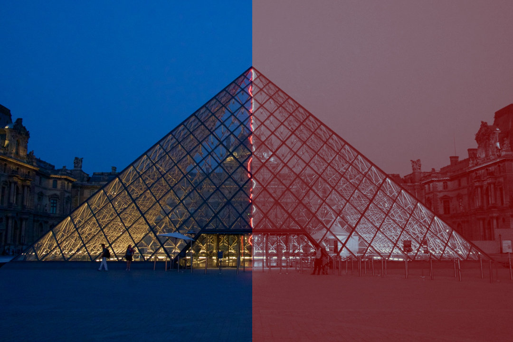
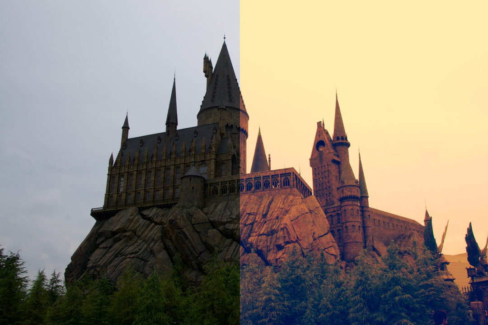
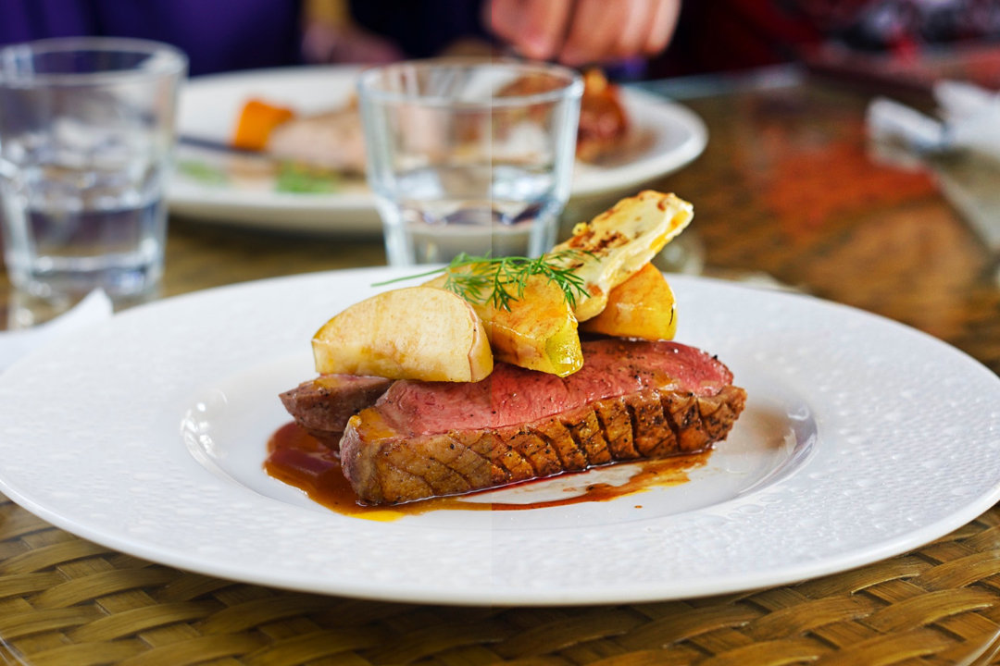

由於本身就有再攝影，所以希望這個 Blog 的圖片儘量都能用自己拍的照片。我對於拍照期望就是能還原最原始當下的情況，所以以往對於濾鏡的使用都嗤之以鼻，認為自己不會用到。不過在客製這個 Blog 的時候，當我把之前 Template 的預設圖換成自己的圖的時候，就總是覺得哪裡怪怪的，挑來挑去都找不到適合的。後來才發現如過要用來裝飾 Blog 用普通色調的圖片就會現得格格不入。如此想想還是嘗試一下濾鏡。
原本打算用 MAC 照片 來調，雖然 照片 裡的工具用來修圖已經足以，不過如果要調色系的話卻太陽春且繁瑣。後來上網找了下發現了Pixlr Touch Up 這個 自動桌子 出品的 Chrome App ， 不過這個 App bug 頗多，有機率會當掉，且如果圖太大會有雜線和做旋轉的時候會破圖，所以建議使用前先縮一下圖。不過裡面的濾鏡還算多元，對於我來說免費的 App 能做到這樣我已經很滿足了，以下列幾個自認為套的還不錯的幾張 Before After 的比較圖：

Blog 封面設計上要放上標語，所以就不適合太花俏的背景的顏色，所以我就使用 Unicolor->Joyce 把背景轉成單色系，來托襯標題。
這張再拍攝的時候，其實是下著雨，不過由於我把快門調到 1/1250 ， 並且我用 Classic->Peter 把色調轉成冷冽，所以看起來頗有下雪的FU。

這張是在大阪環球影城的霍格華茲拍攝的，原始的圖片看起就只是個陰森森的危樓，不過用 Vintage->Kevin 用誇張的對比，和飽和色使他一瞬間有了奇幻感。
原本金碧輝煌的鐘面就已經很有架勢了，不過用 Classic->Josh 把色調轉成紅銅色，並加深陰影，也是別有風味。

這個 Classic->Hagrid 用在食物上真的是犯規阿，可以看到右邊銳化很多，把鴨胸紋理，肉汁以及色澤都突顯出來，並加深不少飽和度，真的讓人胃口大開。
總結一下，我不難理解為什麼濾鏡會這麼受歡迎，有時候即使主題只是地上一株雜草，抑或是曝光調爛了一堆噪點，用個濾鏡東抹西抹一下，看起來是還很文青，真的很方便。不過在嘗試的時候，還是發現有些濾鏡過分調高飽和，或加上一堆暈輝，讓整畫面變得一沱混雜，所以濾鏡真的要慎選。